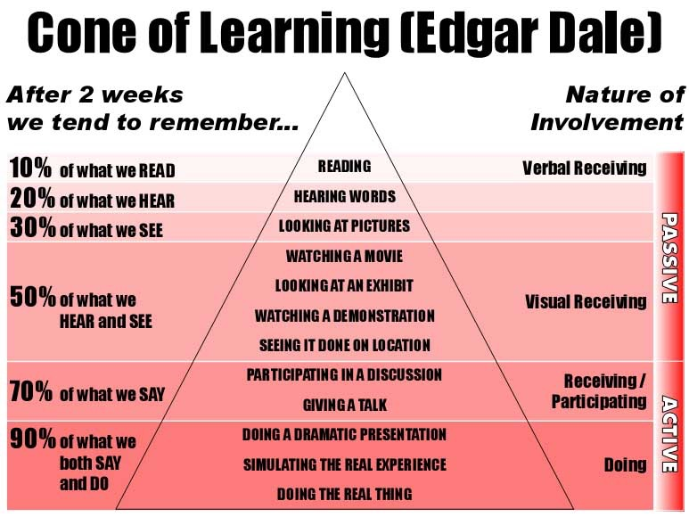
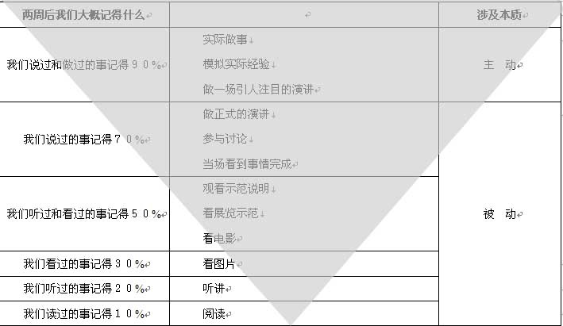

网络安全
黄玮
课程概况
先修课程
计算机安全与维护
计算机⽹络A
Linux 系统与网络管理
密码学应用实践（推荐）
本课程使用教材
自编教材 - 在线
硬件和软件环境
PC
Linux (Kali)
关于课程的教、学方法和原则
教
授⼈以渔
重思路、⽅向讲解，轻傻瓜式重复
学
兴趣第⼀
尽信师，不如⽆师：质疑、思考、实践
会用、用好互联⽹，特别是“搜索”
⼀定要亲自动⼿实践
学习金字塔

遗忘金字塔

重要的事情说三遍
主动
学
主动
做
主动
讲
主动
学
主动
做
主动
讲
主动
学
主动
做
主动
讲
课程目标
通过本课程的讲授和实验操作
你能了解到
⽹络攻防基本原理
⽹络攻防基本⼿段
你不能了解到
如何编写恶意代码
课程体系
内容主题
讲授学时
实验学时
难度评级
计算机网络安全基础
6
2
⭐️⭐️
网络监听与扫描
6
6
⭐️⭐️⭐️
网络与系统渗透
8
10
⭐️⭐️⭐️⭐️
网络与系统防御
12
14
⭐️⭐️⭐️⭐️⭐️
考核方式
平时成绩 30%
上课考勤
主观评价：随堂测试，积极参与课堂讨论
实验报告 70%
5+ 次实验报告
Q&A
欢迎提问😁